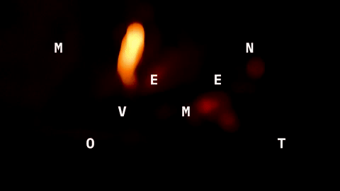
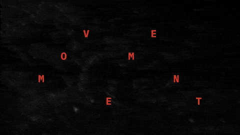
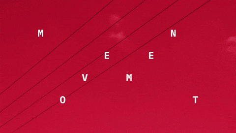
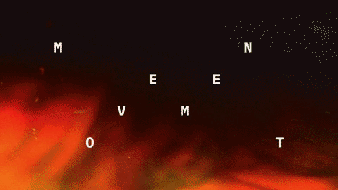

niks božović
/ movement is an experimental short film about the one constant we have in our lives, movement. sometimes, movement can feel so explosive in the power of its individual moments, yet also hypnotic in its repetition. movement is such a powerful aspect of our lives that it just causes that overflow of emotions that propels us forward. knowing that, one day, movement will stop is petrifying, yet the end is only one small part of the process of life.
i co-directed movement in april 2021 with my friend dunja marić and the music was done by david tadić. the film was heavily inspired by the work of len lye and other experimental filmmakers. i really wanna do more stuff like it. /
instagram
   